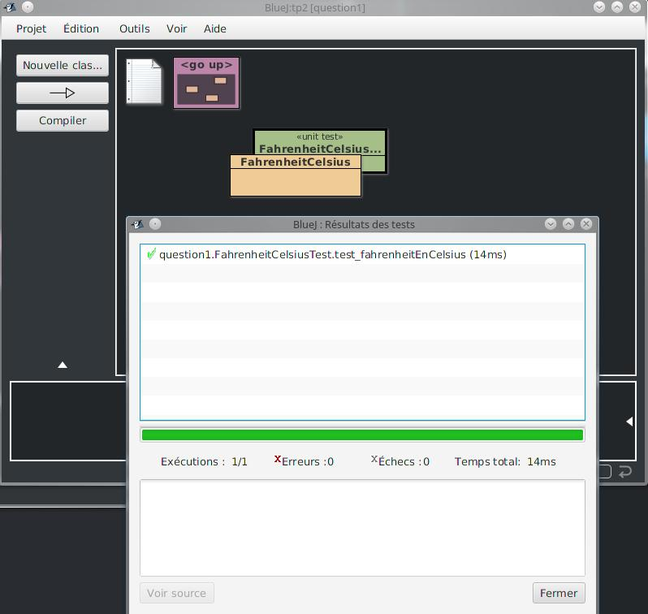

AprËs une vÈrification
de la correcte exÈcution des test unitaires proposÈs...

... on a crÈe notre propre test "testCheck qui permet de mettre en
pratique la crÈation des mes propres test unitaires pour constater que
la convertion se fait correctement: